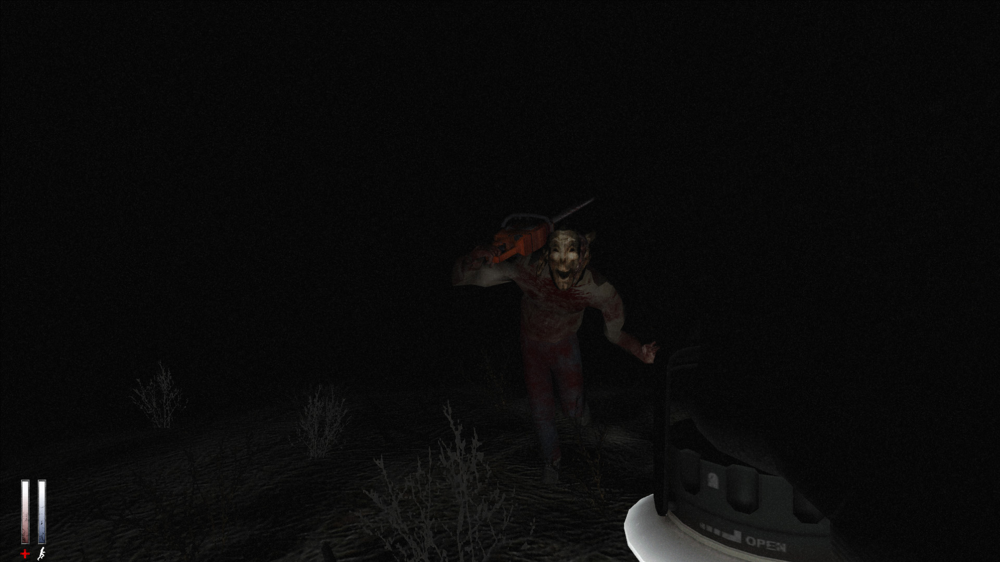

Reseña
Un viaje perturbador dentro de la mente humana
Simon Henriksson despierta herido en un callejón y debe navegar una ciudad distorsionada, enfrentando horrores que representan sus miedos y traumas. El juego explora temas de ansiedad, depresión y disociación a través de una atmósfera opresiva y narrativa simbólica.
Supervivencia y gestión de recursos
El jugador debe administrar munición, salud y resistencia mientras explora, resuelve puzles y combate enemigos que simbolizan los miedos internos de Simon, con un inventario limitado que obliga a decisiones estratégicas.
Inventario limitado
Gestión estratégica para maximizar recursos escasos
Sistema de salud y morfina
Uso de jeringas para curarse que afectan la visión y resistencia, añadiendo riesgo y recompensa
Ambientación y banda sonora
Cry of Fear presenta una atmósfera sombría y opresiva, con escenarios urbanos desolados y deformados que reflejan la mente perturbada del protagonista.
Los gráficos, aunque modestos, usan iluminación y efectos para crear tensión constante.
La banda sonora es minimalista y ambiental, alternando entre melodías inquietantes y silencios que aumentan la ansiedad.
Los efectos sonoros, como susurros, pasos y ruidos distorsionados, refuerzan la inmersión y el terror psicológico, haciendo que cada momento
sea impredecible y angustiante.
Puntos fuertes
- Narrativa profunda y simbólica sobre salud mental
- Atmósfera intensa
- Múltiples finales que aumentan la rejugabilidad
- Experiencia gratuita
Puntos débiles
- Diseño de niveles a veces confuso
- Ritmo irregular en algunos tramos del juego